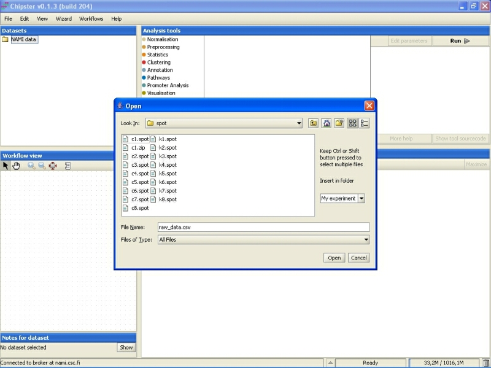
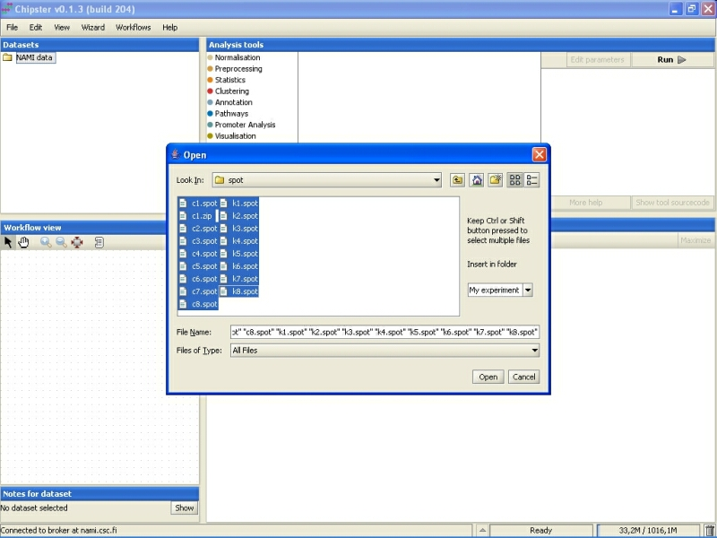
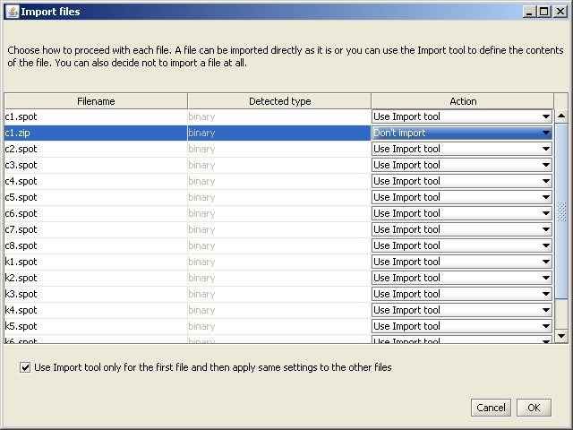
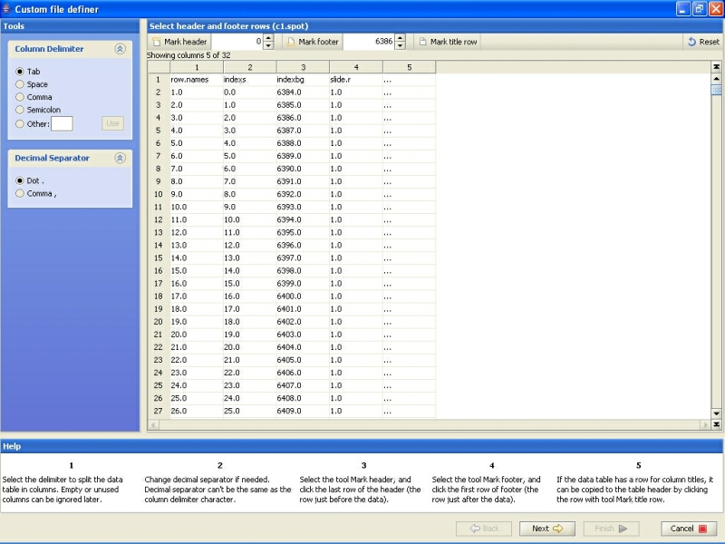
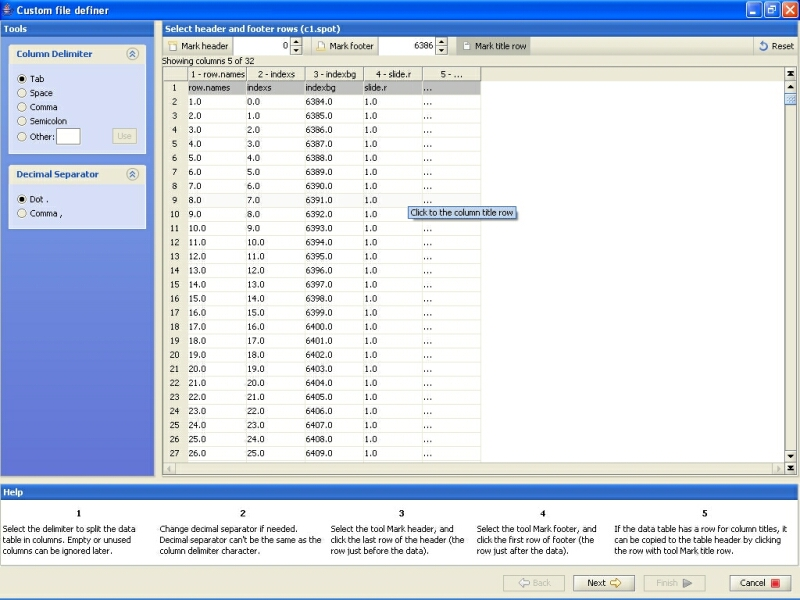
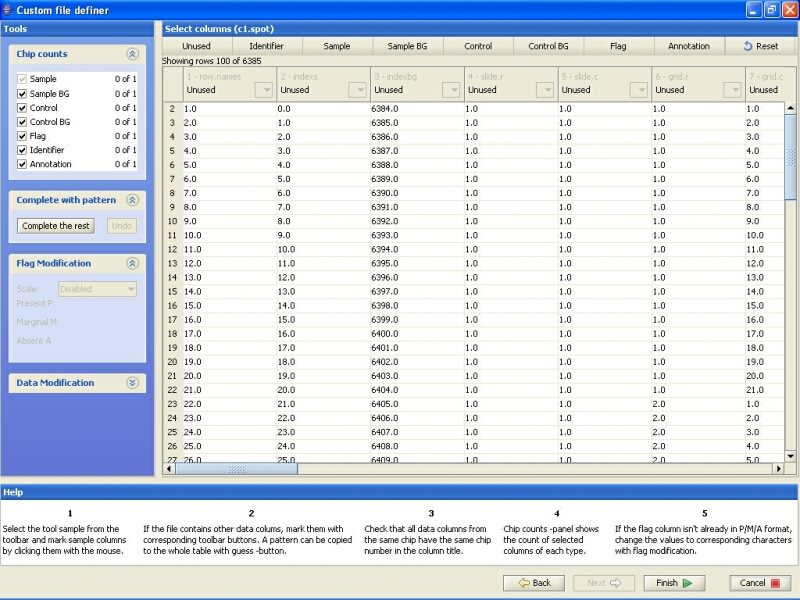
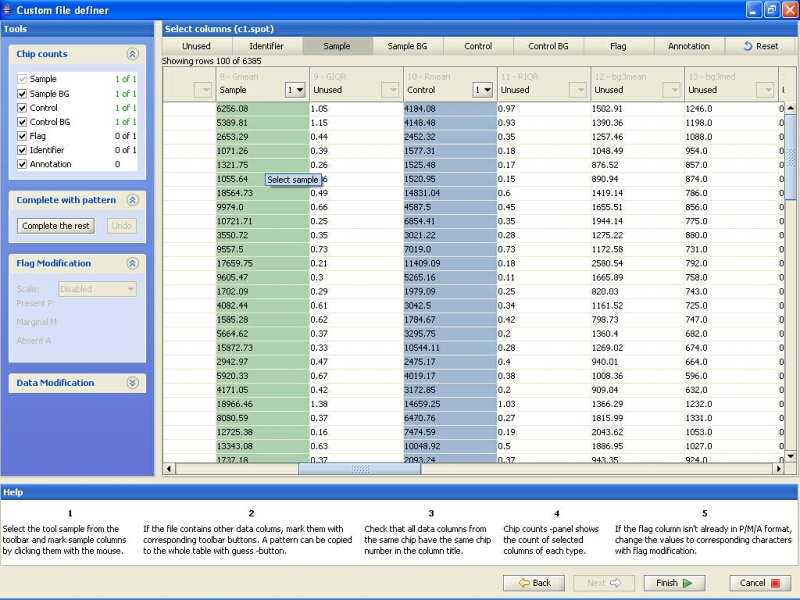
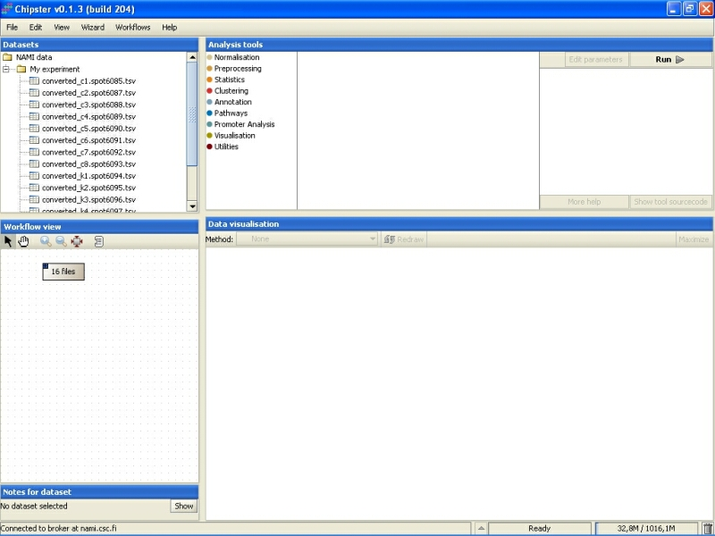

Chipster is capable of reading in generic microarray data. This data can be result files from the image analysis of scanned cDNA microarrays. For example, Agilent and ScanArray data are imported this way.
All the files should be stored in a single folder that can then be imported to Chipster. Select File->Import files, and browse to the correct folder that contains the dataset.
Select the files you want to import. You can select several files either by pressing down the Control (Ctrl) key or the Shift key.
Next the Import action chooser comes up. Typically you don't need to change anything, since the column Action lists all files as 'Use custom file definer'. This means that you need to describe the datafile to the system once, and it loads all other similar files in by default. To get to define the file, click on OK.
The custom file definer opens.
The first step requires you to select the header row, if the columns have header (they usually do). Click on the 'Mark title row' -button, and click on the title row.
After defining the title row, click on Next.
The second step of the custom file definer opens. At this stage, you should define what columns the datafile contains. You should define at least Signal, Signal background, Control and Control background. Additionally, you can also mark some columns as flag, annotation and identifier.
To define the columns, select the meaning by clicking on the button on the top of the page, and then click on one of the columns (not the greyed header).
To conclude the import, click on the Finish-button.
After the data has been imported, it is displayed under the Datasets and in the Workflow view:
Now the data has been successfully imported, and you should normalize it. You can also run some quality control checks on the raw data.